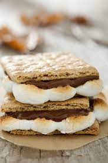

S'Mores

A tasty treat
Ingredients
- graham crackers
- chocolate
- marshmallow
Steps
- Break the graham cracker in half,
so you have two square pieces
- Break off 3 pieces of chocolate
(leave the pieces together, so you have one continuous
chunk)
- Roast the marshmallow to desired doneness
- Place the chocolate on one graham cracker piece
- Remove the marshmallow, and
place it on top of the chocolate
- Top with the other graham cracker piece